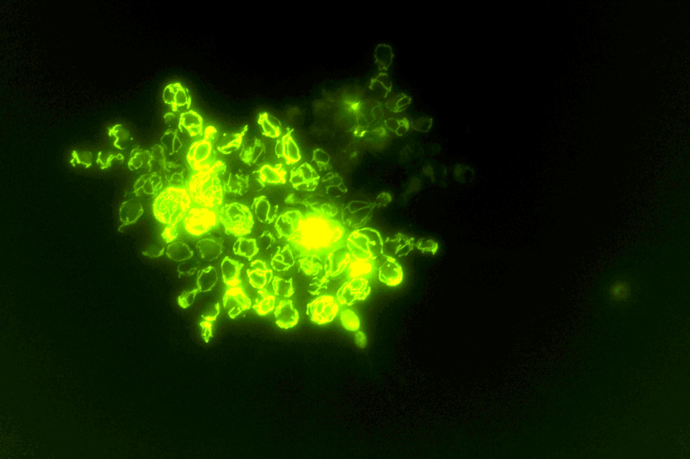
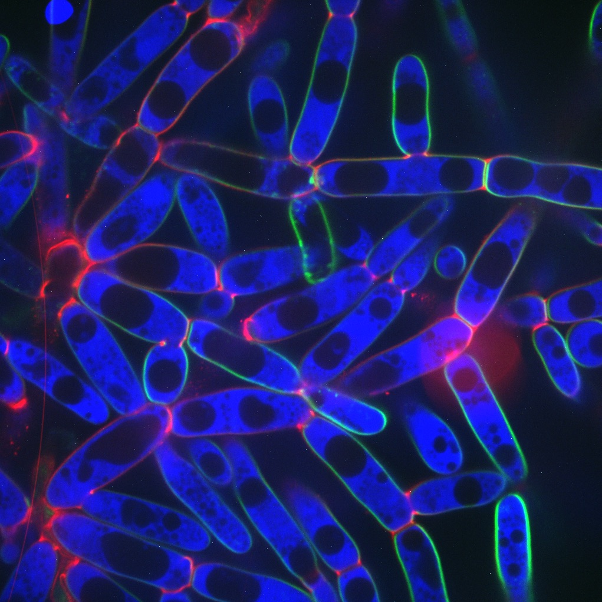

The story
Running the transition forward
The major transitions in individuality happened in the deep past, and the transitional forms are long extinct. Rather than reconstruct the origin of multicellularity from what survives, we evolve it forward under conditions we control, one transfer per day, and freeze the entire record as we go.
1 · The unanswered question
The hierarchy of biological individuality
Life is organised in nested levels: genes within chromosomes, chromosomes within genomes, genomes within cells, and cells within multicellular bodies. At each level, entities that once replicated independently became parts of a larger individual. Biology has a detailed account of what happened at each of these levels, but no general explanation for why such transitions occur.
“That life is hierarchically organized, with species composed of populations, populations of individuals, individuals of cells, cells of organelles, organelles of genomes, genomes of chromosomes, and chromosomes of genes, is so obvious an observation that it is quite remarkable that we have no general explanation of why this is so.”
2 · Why this layer in particular
The importance of multicellularity
The origin of multicellular life was one of the most transformative events in the history of life on Earth. It allowed for the evolution of the large, complex organisms we see today, and nearly every organism visible without a microscope is a product of it.
“…if all multicellular eukaryotes suddenly vanished from Earth, our planet would appear as barren as Mars.”
Understanding how multicellular complexity arises is a central goal of evolutionary biology.
3 · The obstacle
The problem of looking backwards in time
Understanding the evolution of complex multicellular individuals from unicellular ancestors has been extremely challenging, largely because the first steps in this process occurred in the deep past (>200 million years ago). As a result, transitional forms have been lost to extinction. What is left to study is the finished product, and it is tempting to read the regulatory machinery of a modern animal or plant backwards into the origin.
“As an analogy, engineers studying the space shuttle might find it nearly impossible to infer from it how the Wright brothers constructed their first plane.”
4 · The catch
Development is a consequence of multicellularity, not a precondition
Development is the obvious candidate explanation. Transcriptional programs, cell-type specification, and controlled morphogenesis are what allow a group of cells to build a body. But these developmental systems are themselves multicellular adaptations, evolving long after the origin of multicellularity, so they cannot explain how the process started.
A simple group of cells has none of that machinery. It has geometry, mechanics, and whatever its cells were already doing as single cells. The question we address is how simple cell groups like these can begin the process of open-ended multicellular evolution and gradually become more complex.
5 · The answer
Long-term experimental evolution as an alternative approach
Ozan Bozdag founded fifteen populations of snowflake yeast in 2018 and has transferred them every day since. Each population is grown for 24 hours and then selected on how fast it settles through liquid. Five populations ferment anaerobically, five are mixotrophic, and five respire obligately. All fifteen descend from a single known genotype, so nothing about the starting condition has to be inferred. Every 25 days, roughly every 125 generations, a sample of each population is frozen at −80 °C. The archive now holds more than 3,000 samples, and transfers continue daily.
Our model system cannot simply be studied. It has to be created through evolution, which means the primary deliverable of the project is the continuation of the experiment itself. A frozen population can be revived years later and measured with instruments that did not exist when it was frozen. Some of the most important results from Lenski and Barrick's E. coli LTEE came from genome sequencing and genetic reconstruction, neither of which was available at scale when that experiment began in 1988. To our knowledge we are the only research group using long-term experimental evolution to study the origin of multicellularity.
6 · What happened
The first 1,800 transfers
Drag the slider to move through the experiment. The size curve plots all five anaerobic populations at the twelve sampling points in Bozdag et al. 2023 Fig. 1e, digitized from the published figure. Published size data runs through day 600, and the experiment continues well past that. The faint lines behind the mean are the individual replicates, which begin increasing in size at different times.
- Day
- 600
- Transfer
- 600 One transfer per day, so the two counts are the same.
- Generations
- ≈3,000 At 5 generations per transfer (Bozdag et al. 2023).
- Cluster radius
- 434 µm Sampled A sampling point in Bozdag et al. 2023 Fig. 1e, mean of the five anaerobic lines. Digitized from the published figure, so approximate to a few per cent.
- Ploidy
- 4n Tetraploid, fixed. Tong et al. 2025.
Evolved traits
- Day 100 Cells elongate Higher cellular aspect ratio lowers packing density and delays the strain-driven fracture that limits cluster size. Evolved by day 100
- Day 100 Tetraploidy fixes Whole-genome duplication arose by day 50 and fixed by day 100 in all ten focal populations. Longer tetraploid cells make larger clusters. Evolved by day 100
- Day 200 Division becomes synchronous The ancestral first-division delay was lost by day 200 and synchrony was retained through day 1,000. Synchrony builds less branched topologies that fracture later. Evolved by day 200
- Day 400 Branches entangle Elongated branches interlock in configurations that rigid-body motion cannot undo, so groups hold together after many cell-cell bonds break. Evolved by day 400
- Day 600 Hsp90 down-regulated All five macroscopic anaerobic lineages converged on reduced Hsp90, destabilising Cdc28, delaying mitosis and prolonging polarized growth. Evolved by day 600
- Day 600 Bodies become macroscopic Mean cluster radius reaches 434 µm, about 20,000 times the ancestral volume. As a material the yeast goes from weaker than gelatin to the toughness of wood. Evolved by day 600
- Day 715 Small and large specialists coexist Three of five obligately aerobic populations split into coexisting morphs held at roughly 9% large and 91% small by competition for dissolved oxygen. Not yet at this day
- Day 800 Clusters pump their own fluid Above a threshold size, metabolism drives buoyant circulation that carries nutrients inward, sustaining exponential growth past the diffusion limit. Not yet at this day
- Day 1000 Aneuploid routes open Anaerobic tetraploids accumulated extensive, partly convergent aneuploidy that tracked the continued evolution of macroscopic size. Not yet at this day
From the archive

Papers reporting the experiment at this day
5
Most recent: “De novo evolution of macroscopic multicellularity”, Bozdag et al. 2023.
Sources: cluster radius, Bozdag et al. 2023 (two measured points, day 0 and day 600, anaerobic lines). Ploidy, Tong et al. 2025, published through day 1,000. Trait onsets are the day each trait is first reported, which is not necessarily the day it arose. Generations use the published conversion of 5 per transfer. Nothing on this instrument is extrapolated past its last published value.
7 · 2025–2035
Research priorities for 2025–2035
Over the next decade we will focus on four priorities. Each one is a question the experiment has already raised, rather than a topic chosen in advance.
-
01
The origin of multicellular development
How transcriptionally regulated cell differentiation emerges, and whether the appearance of distinct cell types is what entrenches multicellularity.
-
02
The evolution of reproductive specialization
Whether branch entanglement passively creates germ-like and soma-like fates, and how that could scaffold true germ-soma differentiation.
-
03
The evolution of novel multicellular traits
Metabolically driven fluid flows that permit exponential growth beyond the diffusion limit, and the toroidal symmetry-breaking morphologies now present in every mixotrophic population.
-
04
How multicellular evolution changes cell biology
Reductive mitochondrial evolution in the anaerobic lines, and how whole-genome duplication and the aneuploidy that follows it fuel adaptive radiation.
8 · The horizon
The long-term commitment
Lenski's E. coli lines have run since 1988 and are still producing results that could not have been anticipated when they began. Peter and Rosemary Grant studied Darwin's finches on Daphne Major for forty years. The MuLTEE is planned on the same scale, which means the daily transfers, the freezer, and the completeness of the record matter more than any single result. We hope to develop a model system that will be used by researchers around the world, long after our own careers are over.